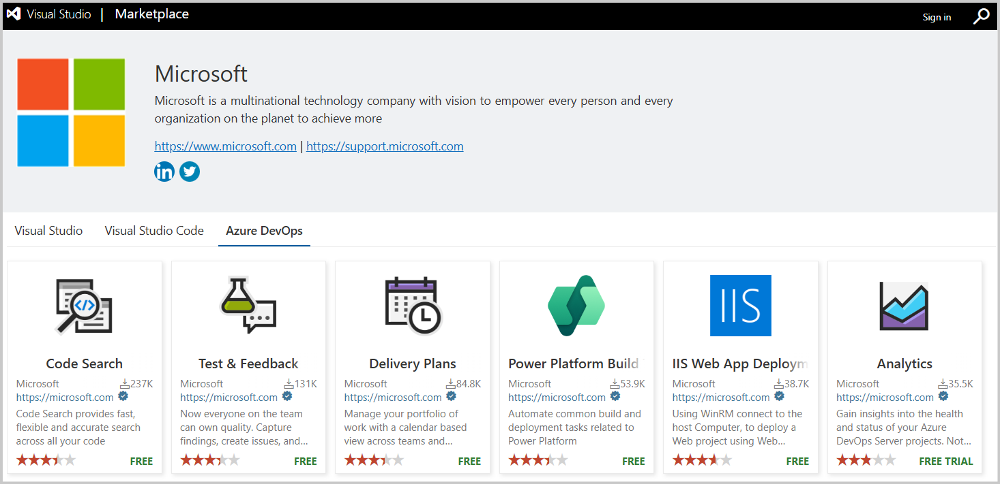
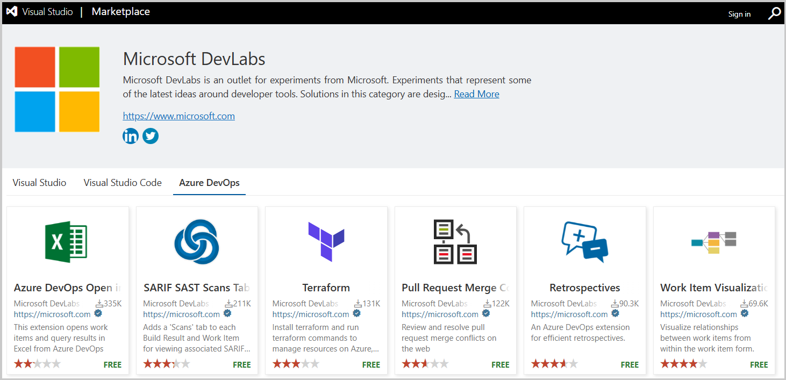

こんにちは、Japan Developer Support Core チームです🐈
Azure DevOps には様々な拡張機能が Marketplace | Extensions for Azure DevOps に公開されています。 本記事ではこれらの Azure DevOps 拡張機能を利用した際にトラブルが発生した場合の、適切なサポートを受けるための方法をご案内します。
はじめに Azure DevOps 拡張機能には大きく分けて以下の3つのパブリッシャーが存在します。
- Microsoft パブリッシャー
- Microsoft DevLabs パブリッシャー
- その他のパブリッシャー
それぞれのパブリッシャーによって適切なサポートを受ける方法が異なるため、詳しく解説します。
Microsoft パブリッシャー
Publisher Microsoft - Visual Studio Marketplace 
弊社 Microsoft が提供している拡張機能となります。これらの拡張機能でトラブルが発生した場合には、弊社テクニカルサポートにてお問い合わせをいただくことが可能です。
注意点としては、Microsoft が提供している拡張機能であるものの Azure DevOps 既定の機能ではないため、拡張機能を提供している製品のサポートチームからの対応となります。
具体的な例としては、 Code Search は、拡張機能であるものの Azure DevOps チームが提供しているため Azure DevOps サポートチームからのサポート提供となりますが、 Synapse workspace deployment や、 Dynamics 365 Finance and Operations Tools に関しては、 Synapse workspace および Dynamics 365 のサポートチームからのサポート提供となります。
もし他製品チームからのサポートとなった場合にも、状況に応じて Azure DevOps サポートチームと内部で協業をしながら進めることができますので、ご安心ください。
Microsoft DevLabs パブリッシャー
Publisher Microsoft DevLabs - Visual Studio Marketplace 
Microsoft DevLabs パブリッシャーが提供している拡張機能に関しては、それぞれの拡張機能ページにある [Q & A] タブからお問い合わせをすることによって適切なサポートを受けることができます。
これらの拡張機能はパブリッシャーの説明ページに書かれているように、以下のような注意点がございますので、ご利用の際には以下をご認識ください。
抄訳: Microsoft DevLabsは、Microsoftの実験を行う場です。開発者向けツールに関する最新のアイデアを反映した実験です。このカテゴリのソリューションは広く利用されることを想定しており、利用やフィードバックの提供を推奨しています。ただし、これらの拡張機能はサポートされておらず、その長期性についての約束はありません。Microsoftカスタマーサポートには連絡しないでください。これらの拡張機能に関する質問、提案、問題点については、特定の拡張機能の「Q&A」セクションをご覧ください。
その他のパブリッシャー
Microsoft パブリッシャー、および Microsoft DevLabs パブリッシャー以外の全てのパブリッシャーとなります。
これらのパブリッシャーが提供している拡張機能は、一般的には [Q & A] タブを確認することでサポートを受けることができます。 多くは [Q & A] タブから GitHub Issue へのリンクとなっており、このような場合には GitHub Issue への投稿をすることでサポートを受けることができます。
また、拡張機能によってはサードパーティーへお問い合わせいただくことで、より早く適切なサポートを受けられる場合がございます。
具体的な例としては Amazon Web Services が提供している AWS Toolkit for Azure DevOps は、 AWS テクニカルサポートにお問い合わせをいただくことでサポートを受けることができる可能性があります。
実際にサポート可能かどうかは弊社 Microsoft にて判断することができかねますので、提供元のサポートへお問い合わせください。
よくある質問
Q. Microsoft DevLabs パブリッシャー、およびその他のパブリッシャーを Microsoft テクニカルサポートでサポートできませんか？
A. 誠に恐れ入りますが、弊社テクニカルサポートではサポートを提供することができません。
しかしながら、拡張機能の動作の問題ではなく Azure DevOps 側の動作の問題である場合には、弊社テクニカルサポートにてサポートを提供可能です。具体的な例としては、Azure Pipelines において何らかの拡張機能タスクがタイムアウトするといった場合には、Azure Pipelines においてのタイムアウトの制限や設定に関する情報は弊社にて提供可能です。一方で、拡張機能タスクの処理に時間がかかる理由や、処理がハングアップしているように見えるといった場合には、弊社にて対応することができません。
もしお客様自身にて判断が難しい場合には、弊社テクニカルサポートにお問い合わせをいただけましたら弊社にて対応可能かをご案内することができますので、お気兼ねなくお問い合わせください。Q. 拡張機能のセキュリティ対策などはどのようになっていますか？
A. 拡張機能の提供元によってセキュリティ対策が実施されます。拡張機能のソースコードにあるコードの脆弱性などの有無は、拡張機能の提供元へご質問ください。
なお、Marketplace では悪意を持った拡張機能からユーザーを保護するためのいくつかの機能がございます。以下の弊社ドキュメントおよび製品チームブログをご確認ください。
本ブログの内容は弊社の公式見解として保証されるものではなく、開発・運用時の参考情報としてご活用いただくことを目的としています。もし公式な見解が必要な場合は、弊社ドキュメント (https://learn.microsoft.com や https://support.microsoft.com) をご参照いただくか、もしくは私共サポートまでお問い合わせください。